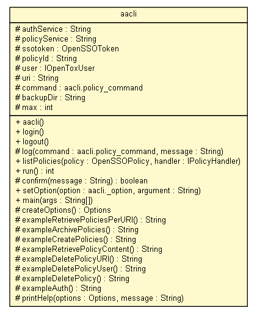

org.opentox.aa.cli
Class aacli

java.lang.Object
 org.opentox.aa.cli.aacli
org.opentox.aa.cli.aacli
public class aacli
- extends Object
|
Constructor Summary |
aacli()
|
| Methods inherited from class java.lang.Object |
clone, equals, finalize, getClass, hashCode, notify, notifyAll, toString, wait, wait, wait |
authService
protected String authService
policyService
protected String policyService
ssotoken
protected OpenSSOToken ssotoken
policyId
protected String policyId
user
protected IOpenToxUser user
uri
protected String uri
command
protected org.opentox.aa.cli.aacli.policy_command command
backupDir
protected String backupDir
max
protected int max
aacli
public aacli()
throws Exception
- Throws:
Exception
login
public void login()
throws Exception
- Throws:
Exception
logout
public void logout()
throws Exception
- Throws:
Exception
log
protected void log(org.opentox.aa.cli.aacli.policy_command command,
String message)
listPolicies
public void listPolicies(OpenSSOPolicy policy,
IPolicyHandler handler)
throws Exception
- Throws:
Exception
run
public int run()
throws Exception
- Throws:
Exception
confirm
protected boolean confirm(String message)
throws UserCancelledException
- Throws:
UserCancelledException
setOption
public void setOption(org.opentox.aa.cli.aacli._option option,
String argument)
throws Exception
- Throws:
Exception
main
public static void main(String[] args)
createOptions
protected static org.apache.commons.cli.Options createOptions()
exampleRetrievePoliciesPerURI
protected static String exampleRetrievePoliciesPerURI()
exampleArchivePolicies
protected static String exampleArchivePolicies()
exampleCreatePolicies
protected static String exampleCreatePolicies()
exampleRetrievePolicyContent
protected static String exampleRetrievePolicyContent()
exampleDeletePolicyURI
protected static String exampleDeletePolicyURI()
exampleDeletePolicyUser
protected static String exampleDeletePolicyUser()
exampleDeletePolicy
protected static String exampleDeletePolicy()
exampleAuth
protected static String exampleAuth()
printHelp
protected static void printHelp(org.apache.commons.cli.Options options,
String message)
Copyright © 2010-2011 Ideaconsult. All Rights Reserved.